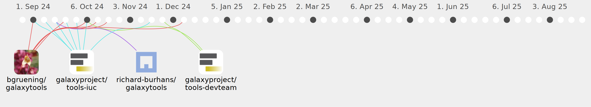

fubar2

Commits all-time: 996
Commits last year: 63

(45)
- b757b28
- cb2166d
- a3d6799
- 4ff6485
- ced5a82
- 1019544
- 092a669
- 28c64f5
- ee17e59
- baaea26
- e3de8bc
- e68d614
- b1c908e
- cd8ee05
- db0b130
- 5b1bc92
- f623792
- b428658
- a34cfce
- 5b07198
- a11ad67
- 59b90e7
- 738ec7b
- 41691b0
- 77a126f
- dee0b7a
- fd2f484
- cbc924a
- b0ccdb9
- 06c54e8
- 2b74546
- 8761666
- 1457423
- 07dee21
- f6d2bb7
- 7cd40bf
- fd83260
- 642e1d0
- be474d8
- e9dbc13
- e0d1157
- 6eea952
- de577b0
- 7169054
- a2dd716
(9)
(8)
(1)